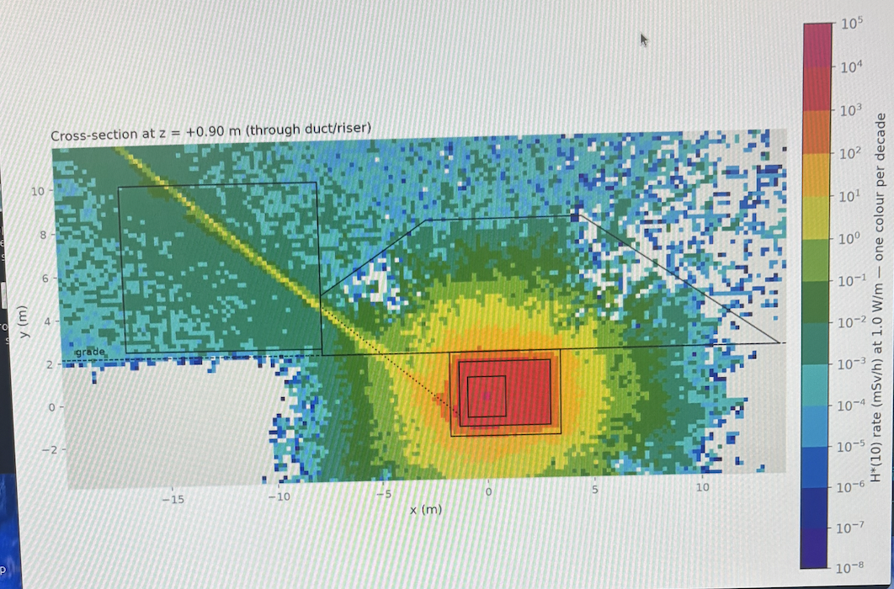
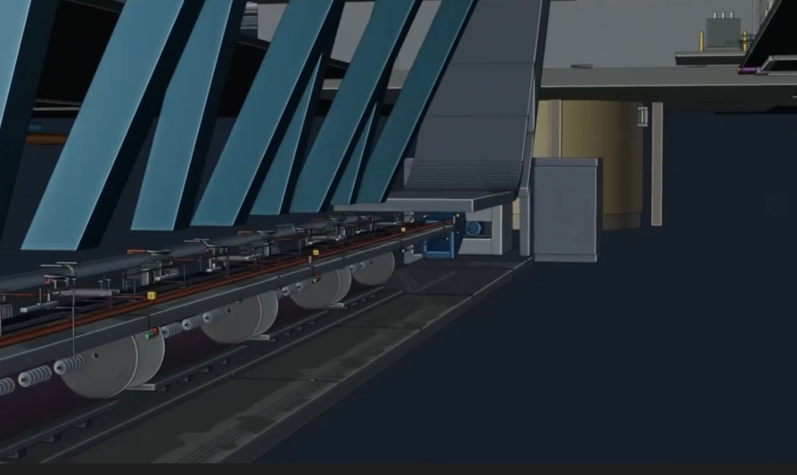
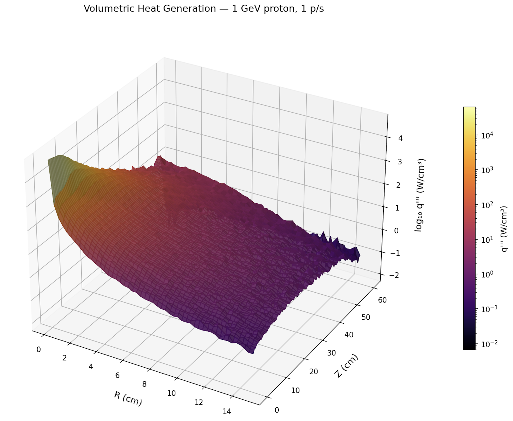
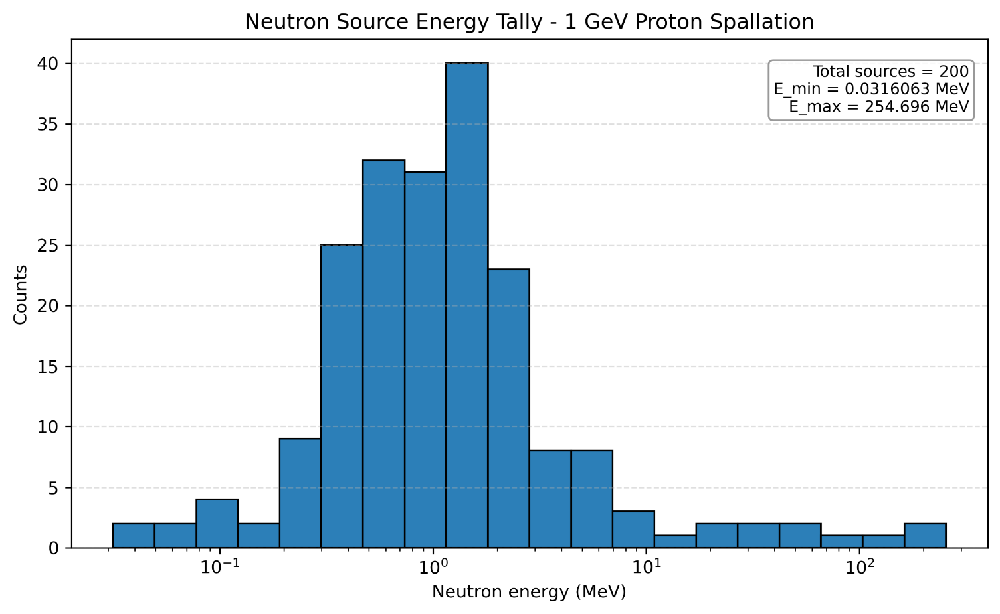
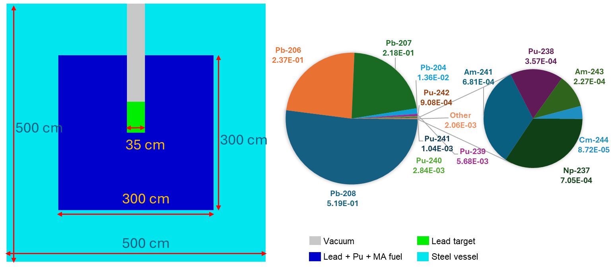
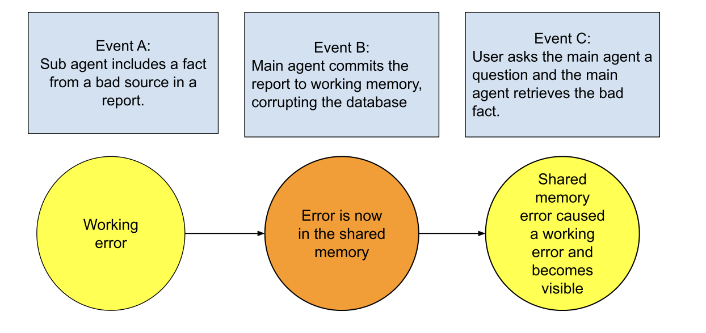

Loïc Magnan - Engineer
A silent film made from the reactor visualization. Neutron paths use recorded OpenMC positions at the model's original scale; particle size and time are adjusted for visibility.
Chasing hard problems with AI.
Taurus
Co-Developer
- Taurus is an algorithmic trade origination, execution, and risk management platform.
- It has comprehensive front, middle, and back office agentic systems.
- The system incorporates data feeds, web scrapers, Graph RAGs, multiple agents with constitutions, and proprietary DCF and Black–Scholes models to screen options.
- Currently, it is actively managed; the cash-settled put and covered call trades are the best performing feature.


ATLAS
Designer and Developer
- ATLAS is the proprietary intelligence layer for Subcritical Systems.
- I designed and developed the current version, which features 3D capabilities, project planning, as well as regulatory and EPC functionality.
- This system is now maintained by 5 engineers and is functional.




NTP
Co-Author
- I co-authored a paper about the regulatory feasibility of atmospheric testing of nuclear thermal propulsion rockets.
- This is an end-to-end study including neutronics, erosion, and atmospheric dispersion.
- We presented it at NETS 2026.


ADS
Research Contributor
- I was responsible for the high-energy physics simulations using FLUKA for this accelerator-driven system neutronics study.
- I also contribute to burnup analysis in Professor Kozlowski’s research group, studying how the fuel composition changes as the system operates.






Agentic System Research
Research in Progress
- I am currently working with Ian Burges and Matt Burges at Ascendance Foundry on research into multi-agent systems.
- The goal of the study is to quantify entropy in multi-agent systems in order to develop a playbook for minimizing error.


Model preview
e is the fraction of active work that is contaminated.
m is the fraction of memory that is contaminated.
- α
- The rate of new mistakes in the work.
- β
- The correction rate of new mistakes.
- γ
- The rate at which contaminated memory causes active working errors.
- δ
- The rate at which wrong active work contaminates memory.
- ε
- The rate at which errors in memory are corrected.